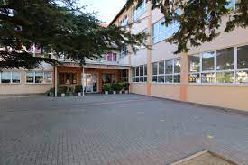
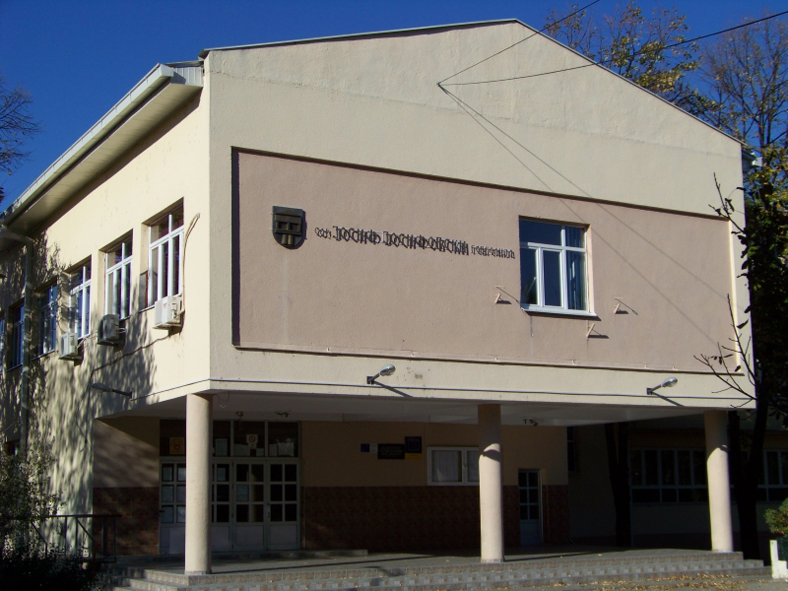

Education!
- Primary school!
- High school!
- Academic education!
OOU Krste Misirkov, Gevgelija.
In North Macedonia, Misirkov is regarded as the most prominent Macedonian publicist, philologist and linguist who set the principles of the standard Macedonian in the early 20th century. In some of his writings he identifies the Macedonians as separate nation and the Macedonian as a separate South Slavic language.

SOU Josif Josifovski, Gevgelija.
Josif Josifovski was born in Gevgelija on August 2, 1915, in a poor family. He studied as a scholarship holder in Kragujevac, Sumadija, and then continued his studies at the Faculty of Law in Belgrade. He took part in all student demonstrations, protests and actions in Belgrade, for which he was arrested. He became a member of the CPY in 1938.

University American College Skopje.
The University American College Skopje (abbr. UACS) is a private university established in 2005. It is headquartered in Skopje, North Macedonia. The premises of UACS encompass 4,000 m2. The Student Council helps share students’ ideas, interests, and concerns with the teachers and principal. It also helps students raise funds for school wide projects.
Some of my favourite courses at UACS have been:
- Calculus
- Databases
- Software engineering
- Programming languages
- Multimedia